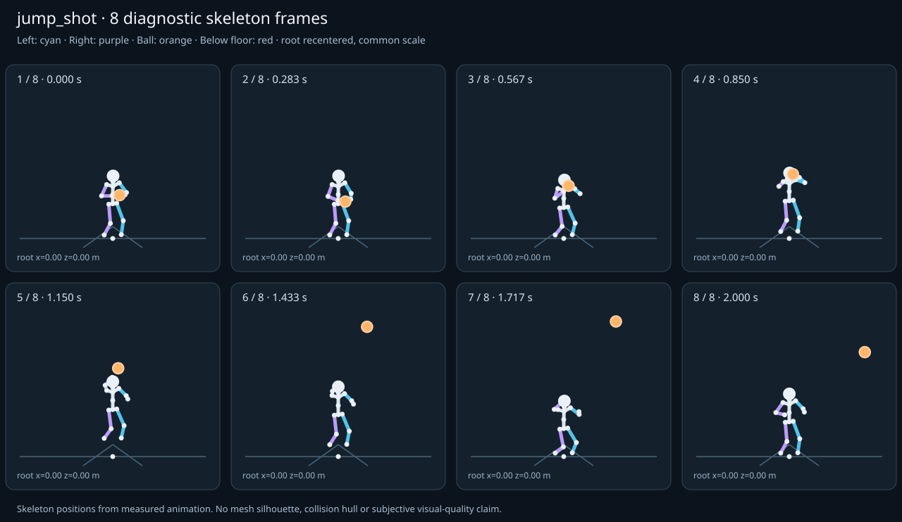

מה הוריד את הציון
- קפיצות פוזה: LeftForeArm בזמן 1.0833 ש׳; קפיצת סיבוב שקולה 25.7099 מעלות ב־60Hz (צהוב)
- כניסה ויציאה מול המתנה: פער ב־כניסה מול המתנה; יחס חריגה 1.9703 (צהוב)
כיסוי: 100%. לא כל מדד חל על כל קליפ; הסטטוס והראיות מפורטים למטה.
שמונה פריימים
תצוגת שלד אבחונית שנבנתה מהפריימים הנמדדים. צד שמאל בכחול, ימין בסגול, כדור בכתום. מיקום השורש ממורכז לצפייה; מיקומו בעולם כתוב בכל פריים.

המדדים והראיות
| מדד | מצב | ערך | ציון | סף ופרטי מדידה |
|---|---|---|---|---|
| החלקת רגליים | ירוק | 0 height ratio | 99 | {
"definition": {
"label": "החלקת רגליים",
"unit": "height ratio",
"green": 0.01,
"yellow": 0.035,
"weight": 18,
"description": "Maximum horizontal sole displacement from the first sample of each declared support window, divided by character height. Inferred support is used only when no windows were supplied."
},
"value": 0.000337,
"status": "green",
"score": 99.33,
"evidence": {
"coordinateSpace": "authored reference world (simulation-owned)",
"supportSource": "declared",
"windows": 4,
"samples": 152,
"maxDriftMeters": 0.00057,
"p95SpeedMetersPerSecond": 0.019194,
"worst": {
"bone": "RightFoot",
"t": 1.65,
"start": 1.566667,
"end": 2,
"driftMeters": 0.00057
}
}
} |
| חדירה לרצפה | ירוק | 0.001 height ratio | 97 | {
"definition": {
"label": "חדירה לרצפה",
"unit": "height ratio",
"green": 0.005,
"yellow": 0.02,
"weight": 15,
"description": "Maximum depth of the supplied sole probe points and all skeletal joint centers below the declared floor plane, divided by height. Sole probes are not a mesh collision audit."
},
"value": 0.000736,
"status": "green",
"score": 97.06,
"evidence": {
"samples": 2420,
"floorY": 0,
"probeKind": "declared sole probes plus skeletal joint centers (no mesh surfaces)",
"maxDepthMeters": 0.001243,
"worst": {
"t": 1.616667,
"bone": "LeftFoot",
"depthMeters": 0.001243,
"y": -0.001243
}
}
} |
| קפיצות פוזה | צהוב | 1.714 discontinuity ratio | 66 | {
"definition": {
"label": "קפיצות פוזה",
"unit": "discontinuity ratio",
"green": 1,
"yellow": 2.5,
"weight": 18,
"description": "Maximum adjacent 60 Hz-equivalent step: root-relative marker displacement / 0.04 height, root-relative rotation / 15 degrees, or root translation / 0.08 height. A fast continuous action can also exceed this screening threshold."
},
"value": 1.71399,
"status": "yellow",
"score": 65.72,
"evidence": {
"adjacentPairs": 120,
"observations": 2040,
"maxDegrees60Hz": 25.709855,
"maxMarkerStepHeight60Hz": 0.066513,
"maxRootStepHeight60Hz": 0,
"worst": {
"ratio": 1.7139903105497387,
"t": 1.083333,
"previousTime": 1.066667,
"bone": "LeftForeArm",
"markerStepHeight60Hz": 0.059177,
"degrees60Hz": 25.709855
}
}
} |
| חריגות אנטומיות | ירוק | 0 % affected frames | 100 | {
"definition": {
"label": "חריגות אנטומיות",
"unit": "% affected frames",
"green": 0.5,
"yellow": 3,
"weight": 14,
"description": "Percentage of frames with elbow or knee flexion above 165 degrees, neck bend above 80 degrees, or a segment length changing by more than 5%. Optional calibrated hinge checks detect reverse knee flexion above 8 degrees. Conservative marker limits do not diagnose axial joint twist."
},
"value": 0,
"status": "green",
"score": 100,
"evidence": {
"testedFrames": 121,
"affectedFrames": 0,
"checks": 2057,
"maxLimbFlexionDegrees": 129.206841,
"maxRelativeSegmentLengthChange": 0,
"hingeDirectionChecked": true,
"axialTwistChecked": false,
"violations": []
}
} |
| מגע בכדור | ירוק | 0.001 height ratio | 98 | {
"definition": {
"label": "מגע בכדור",
"unit": "height ratio",
"green": 0.015,
"yellow": 0.05,
"weight": 13,
"description": "Maximum absolute distance from the ball surface to the sampled, bone-transformed declared contact point, divided by height. Events are evaluated at their exact declared times by interpolation."
},
"value": 0.001182,
"status": "green",
"score": 98.42,
"evidence": {
"radiusMeters": 0.12,
"samples": 131,
"missed": [],
"contacts": [
{
"t": 0.983333,
"bone": "LeftHand",
"gapMeters": 0.001997,
"signedGapMeters": -0.001997,
"centerDistanceMeters": 0.118003,
"contactPoint": [
0.030634,
1.772735,
0.330917
],
"ballCenter": [
-0.086916,
1.772223,
0.3206
],
"declaredLocalPoint": true
},
{
"t": 1.116667,
"bone": "RightHand",
"gapMeters": 0.001776,
"signedGapMeters": -0.001776,
"centerDistanceMeters": 0.118224,
"contactPoint": [
-0.200892,
1.824064,
0.310982
],
"ballCenter": [
-0.09608,
1.878555,
0.306284
],
"declaredLocalPoint": true
},
{
"t": 0.516667,
"bone": "RightHand",
"gapMeters": 0.001073,
"signedGapMeters": -0.001073,
"centerDistanceMeters": 0.118927,
"contactPoint": [
-0.148909,
1.113146,
0.283927
],
"ballCenter": [
-0.031244,
1.124876,
0.29661
],
"declaredLocalPoint": true
},
{
"t": 0.55,
"bone": "RightHand",
"gapMeters": 0.000843,
"signedGapMeters": -0.000843,
"centerDistanceMeters": 0.119157,
"contactPoint": [
-0.154821,
1.154958,
0.280993
],
"ballCenter": [
-0.040618,
1.186922,
0.292592
],
"declaredLocalPoint": true
},
{
"t": 0.583333,
"bone": "LeftHand",
"gapMeters": 0.000764,
"signedGapMeters": 0.000764,
"centerDistanceMeters": 0.120764,
"contactPoint": [
0.066879,
1.244931,
0.320908
],
"ballCenter": [
-0.04953,
1.245482,
0.288773
],
"declaredLocalPoint": true
},
{
"t": 0.55,
"bone": "LeftHand",
"gapMeters": 0.000756,
"signedGapMeters": 0.000756,
"centerDistanceMeters": 0.120756,
"contactPoint": [
0.075684,
1.186688,
0.325081
],
"ballCenter": [
-0.040618,
1.186922,
0.292592
],
"declaredLocalPoint": true
},
{
"t": 1.05,
"bone": "RightHand",
"gapMeters": 0.000702,
"signedGapMeters": -0.000702,
"centerDistanceMeters": 0.119298,
"contactPoint": [
-0.192706,
1.798357,
0.328458
],
"ballCenter": [
-0.093424,
1.864243,
0.322603
],
"declaredLocalPoint": true
},
{
"t": 0.75,
"bone": "RightHand",
"gapMeters": 0.000677,
"signedGapMeters": 0.000677,
"centerDistanceMeters": 0.120677,
"contactPoint": [
-0.167823,
1.309236,
0.285557
],
"ballCenter": [
-0.069938,
1.379598,
0.280028
],
"declaredLocalPoint": true
},
{
"t": 0.45,
"bone": "RightHand",
"gapMeters": 0.00067,
"signedGapMeters": -0.00067,
"centerDistanceMeters": 0.11933,
"contactPoint": [
-0.132537,
0.991852,
0.288902
],
"ballCenter": [
-0.014158,
0.99138,
0.303932
],
"declaredLocalPoint": true
},
{
"t": 0.616667,
"bone": "LeftHand",
"gapMeters": 0.000498,
"signedGapMeters": 0.000498,
"centerDistanceMeters": 0.120498,
"contactPoint": [
0.059158,
1.296005,
0.316527
],
"ballCenter": [
-0.057265,
1.296313,
0.285458
],
"declaredLocalPoint": true
},
{
"t": 0.75,
"bone": "LeftHand",
"gapMeters": 0.000498,
"signedGapMeters": 0.000498,
"centerDistanceMeters": 0.120498,
"contactPoint": [
0.04653,
1.379464,
0.310928
],
"ballCenter": [
-0.069938,
1.379598,
0.280028
],
"declaredLocalPoint": true
},
{
"t": 0.883333,
"bone": "RightHand",
"gapMeters": 0.000441,
"signedGapMeters": 0.000441,
"centerDistanceMeters": 0.120441,
"contactPoint": [
-0.169717,
1.471373,
0.305239
],
"ballCenter": [
-0.075249,
1.545008,
0.292597
],
"declaredLocalPoint": true
},
{
"t": 0.416667,
"bone": "RightHand",
"gapMeters": 0.000417,
"signedGapMeters": -0.000417,
"centerDistanceMeters": 0.119583,
"contactPoint": [
-0.126225,
0.930406,
0.290268
],
"ballCenter": [
-0.007772,
0.930534,
0.306669
],
"declaredLocalPoint": true
},
{
"t": 1.083333,
"bone": "RightHand",
"gapMeters": 0.000372,
"signedGapMeters": -0.000372,
"centerDistanceMeters": 0.119628,
"contactPoint": [
-0.200271,
1.784926,
0.293531
],
"ballCenter": [
-0.096045,
1.843635,
0.292584
],
"declaredLocalPoint": true
},
{
"t": 0.95,
"bone": "RightHand",
"gapMeters": 0.000357,
"signedGapMeters": 0.000357,
"centerDistanceMeters": 0.120357,
"contactPoint": [
-0.177238,
1.625636,
0.324115
],
"ballCenter": [
-0.082912,
1.699229,
0.310988
],
"declaredLocalPoint": true
},
{
"t": 0.516667,
"bone": "LeftHand",
"gapMeters": 0.000343,
"signedGapMeters": 0.000343,
"centerDistanceMeters": 0.120343,
"contactPoint": [
0.084626,
1.125395,
0.329113
],
"ballCenter": [
-0.031244,
1.124876,
0.29661
],
"declaredLocalPoint": true
},
{
"t": 0.916667,
"bone": "RightHand",
"gapMeters": 0.000331,
"signedGapMeters": 0.000331,
"centerDistanceMeters": 0.120331,
"contactPoint": [
-0.173623,
1.548533,
0.314156
],
"ballCenter": [
-0.078856,
1.621556,
0.301254
],
"declaredLocalPoint": true
},
{
"t": 0.583333,
"bone": "RightHand",
"gapMeters": 0.000265,
"signedGapMeters": 0.000265,
"centerDistanceMeters": 0.120265,
"contactPoint": [
-0.161102,
1.20286,
0.274677
],
"ballCenter": [
-0.04953,
1.245482,
0.288773
],
"declaredLocalPoint": true
},
{
"t": 0.483333,
"bone": "RightHand",
"gapMeters": 0.000254,
"signedGapMeters": -0.000254,
"centerDistanceMeters": 0.119746,
"contactPoint": [
-0.141117,
1.060965,
0.286671
],
"ballCenter": [
-0.022179,
1.059537,
0.300495
],
"declaredLocalPoint": true
},
{
"t": 0.85,
"bone": "RightHand",
"gapMeters": 0.00024,
"signedGapMeters": 0.00024,
"centerDistanceMeters": 0.12024,
"contactPoint": [
-0.166957,
1.400925,
0.298191
],
"ballCenter": [
-0.072499,
1.474319,
0.285997
],
"declaredLocalPoint": true
}
],
"contactDetailsTruncated": true,
"coordinateSpace": "authored reference world (simulation-owned)"
}
} |
| כניסה ויציאה מול המתנה | צהוב | 1.97 continuity ratio | 65 | {
"definition": {
"label": "כניסה ויציאה מול המתנה",
"unit": "continuity ratio",
"green": 1,
"yellow": 3,
"weight": 10,
"description": "Worst entry/exit mismatch to the best matching idle phase: RMS marker error / 0.04 height, RMS bone rotation / 25 degrees, or RMS endpoint velocity error / 0.75 height per second. Horizontal root translation is aligned; root height and body pose remain measurable."
},
"value": 1.970344,
"status": "yellow",
"score": 65.44,
"evidence": {
"entry": {
"ratio": 1.9703441794719347,
"t": 0,
"idleTime": 2.366667,
"markers": 17,
"rmsPositionHeight": 0.056195,
"rmsRotationDegrees": 49.258604,
"rmsVelocityHeightPerSecond": 0.009771,
"velocityEvaluated": true
},
"exit": {
"ratio": 1.9393928884951421,
"t": 2,
"idleTime": 1.966667,
"markers": 17,
"rmsPositionHeight": 0.051756,
"rmsRotationDegrees": 48.484822,
"rmsVelocityHeightPerSecond": 0.03253,
"velocityEvaluated": true
},
"worstEndpoint": "entry",
"alignment": "horizontal root translation; raw asset poses used when provided"
}
} |
| מהירות גוף מול צעדים | לא חל | — relative speed error | — | {
"definition": {
"label": "מהירות גוף מול צעדים",
"unit": "relative speed error",
"green": 0.2,
"yellow": 0.5,
"weight": 8,
"description": "Relative difference between average root travel speed and the median backward support-foot sweep speed relative to the root. Cadence and implied stride lengths are also reported. In-place clips need an explicit reference travel scenario; stationary actions are not scored as locomotion."
},
"value": null,
"status": "not-applicable",
"score": null,
"reason": "This action is not declared locomotion.",
"evidence": {}
} |
| סימטריה | ירוק | 0 relative mismatch | 100 | {
"definition": {
"label": "סימטריה",
"unit": "relative mismatch",
"green": 0.03,
"yellow": 0.1,
"weight": 4,
"description": "Maximum bilateral segment-length mismatch. Looping locomotion additionally compares reflected half-cycle leg markers; explicit pose symmetry compares simultaneous bilateral markers. One-sided actions retain unscored motion diagnostics, so a valid kick or dribble arm is not penalized for intentional asymmetry."
},
"value": 0,
"status": "green",
"score": 100,
"evidence": {
"mode": "structural",
"modeSource": "structural default for intentional asymmetry",
"structuralMismatch": 0,
"segments": [
{
"segment": "Arm-ForeArm",
"mismatch": 0
},
{
"segment": "ForeArm-Hand",
"mismatch": 0
},
{
"segment": "UpLeg-Leg",
"mismatch": 0
},
{
"segment": "Leg-Foot",
"mismatch": 0
}
],
"motionRmsHeight": null,
"worstMotion": null,
"bilateralPoseRmsHeightUnscored": 0.102041,
"note": "One-sided authored actions are checked for structural symmetry only."
}
} |